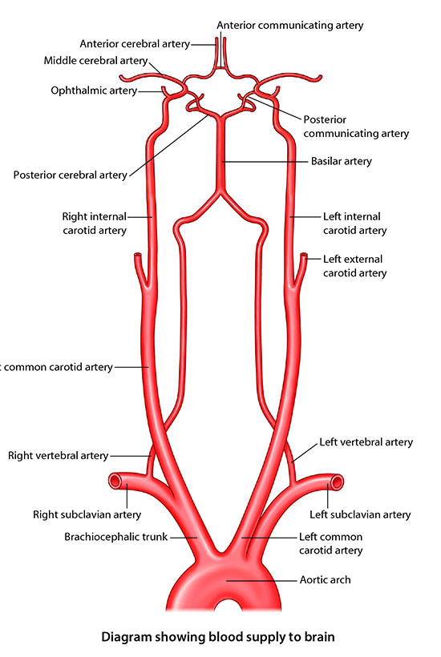

×

Neurology Lab 1 - Module 1 - Blood Supply to the Brain: Page 1 of 5
READINGS:598-Gray's Anatomy for Students (Fourth Edition): Pages: 863, 868-882 |
|  |
| Tap on image to enlarge |
| Begin with the aortic arch. | |
| Add the brachiocephalic trunk. | |
| Add the right subclavian artery. | |
| Add the left subclavian artery. | |
| Add the right vertebral artery. | |
| Add the left vertebral artery. |
| Add the vertebra CVII, T1 and TII. | |
| Add the vertebra CIII,CIV,CV and CVI. |
One of the distinguishing features of the cervical vertebra is the presence of the foramen transversarium. Why does the vertebral artery not pass through the foramen transversarium of CVII? |
|
|
Rotate the cadaver and notice that to pas through the CVII foramen transversarium would require an acute angular change in the direction of the artery, thereby allowing for kinks in the vertebral artery and possible obstuction of blood flow to the brain. You can easily see this by rotaing the cadaver 90 degrees. |
|
| Add the atlas CI. | |
| Using the Rotate tool, rotate the cadavar for a posterior view of the vertebral arteries curving around the atlas. You may want to Highlight the atlas to see this better. |